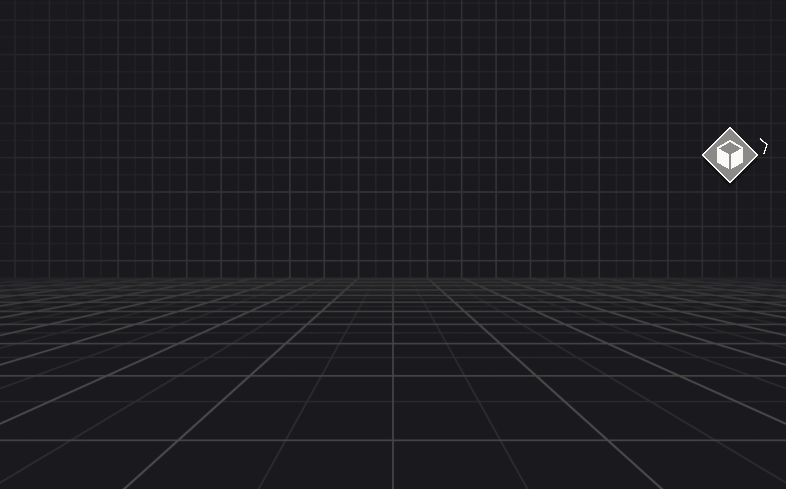

Overview
Target Indicators provide pixel-based screen coordinates for 3D world-space positions. These coordinates represent the screen space projection of a target, even when it's off-screen. If configured, the system bounds these screen coordinates to the edges of the display, indicating the target's nearest direction. This capability is useful in games or applications when guiding users to objectives or other points of interest that are not currently in the camera's view.
Beyond basic positioning, Target Indicators also offer contextual data about a target. This includes, for example, the rotation required to point an arrow directly at the target in screen space, or whether the target lies outside a predefined screen boundary.

Main components
The target indicator system is comprised of two main components.
Target Indicator Manager
The Target Indicator Manager handles all tracked targets. It calculates the necessary data for positioning visual indicators on the screen. You can use it to manage the lifecycle events of indicators, receiving notifications when they change, or retrieve screen-space data directly for custom lifecycle control. This manager integrates with any UI system, as it solely focuses on converting world-space positions to screen-space coordinates.
Its configurable options allow you to define the boundary type, shape, and size, customizing the screen boundary for your application's requirements.
Tip
The Target Indicators package offers Samples that provides prefabs using uGUI that you can customize for your project's needs if you don't want to build your own visual indicators.
Target Indicator
A Target Indicator is the data structure generated by the target indicator manager that holds screen-space information for visualizing a tracked target. While it functions as a conceptual component within the system's design, a
TargetIndicatoris a C# struct, not a Unity Component that attaches to GameObjects.This struct contains relevant information about a tracked target, such as the screen pose (coordinates and rotation), the target it's tracking, and if it's outside the configured boundary.